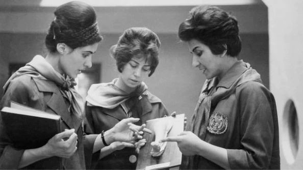
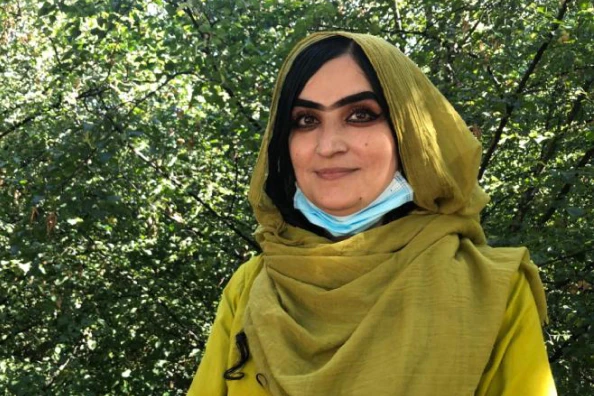
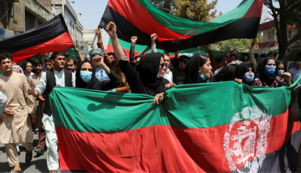

L’histoire des femmes en Afghanistan
De 1920 à nos jours, la vie des femmes afghanes n’a cessé d’être bouleversée par des restrictions.
Voir articleUne vie bouleversée par le retour des talibans
Découvrez le portrait d’une féministe engagée, Palwasha, qui s’est réfugiée en France à cause de la menace des talibans.
Voir articleUn bond dans le passé pour les femmes afghanes ?
Reportage qui montre les manifestations des femmes afghanes qui se battent pour leurs droits depuis le retour des talibans au pouvoir en août 2021.
Voir article